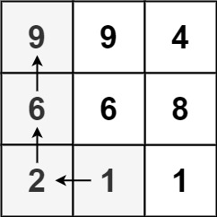
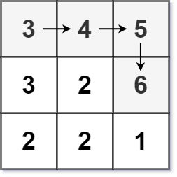

329. 矩阵中的最长递增路径
| 题目信息 | 内容 |
|---|---|
| 难度 | 困难 |
| 核心模式 | DFS + 记忆化（等价于 DAG 上的 DP） |
| 时间复杂度 | O(m·n) |
| 空间复杂度 | O(m·n) |
题目与约束
给定一个 m x n 整数矩阵 matrix ，找出其中 最长递增路径 的长度。
对于每个单元格，你可以往上，下，左，右四个方向移动。 你 不能 在 对角线 方向上移动或移动到 边界外（即不允许环绕）。
示例 1：

输入：matrix = [[9,9,4],[6,6,8],[2,1,1]]
输出：4
解释：最长递增路径为 [1, 2, 6, 9]。
示例 2：

输入：matrix = [[3,4,5],[3,2,6],[2,2,1]]
输出：4
解释：最长递增路径是 [3, 4, 5, 6]。注意不允许在对角线方向上移动。
示例 3：
输入：matrix = [[1]]
输出：1
提示：
-
m == matrix.length -
n == matrix[i].length -
1 <= m, n <= 200 -
0 <= matrix[i][j] <= 231 - 1
核心不变量
记
dp[i][j]为"以(i, j)为起点"的最长递增路径长度；由于严格递增使得移动方向构成有向无环图，dp[i][j] = 1 + max(dp[邻居])（仅当邻居值更大），每个格子只算一次。
完整推导
思路推导
- 痛点（暴力 DFS 会指数爆炸）
从每个格子出发做四方向 DFS 找最长递增路径，思路很自然，但同一个格子会被不同起点反复搜索，指数级重复计算，200×200 直接超时。
- 发现重复子问题（记忆化）
关键观察：(i, j) 往后的最长路径，只取决于它自己以及比它大的邻居，和"从哪条路走到这里"无关。这就是重叠子问题。于是用一个 memo[i][j] 记录"以 (i, j) 为起点的最长长度"，第一次算完就缓存，之后直接返回。
- 为什么不会有环（无后效性）
路径要求严格递增，所以每一步都走向更大的值，不可能绕回来形成环。整个状态图是一张有向无环图（DAG），记忆化 DFS 天然正确，无需 visited 标记。
- 小例子
[[9,9,4],[6,6,8],[2,1,1]]：从 9（左上）出发无更大邻居，dp=1；从 1（底部）出发可走向 2 再到 6 再到 9，dp=4。对所有格子取最大值即答案。
Java 实现（记忆化 DFS）
class Solution {
private int[][] memo; // memo[i][j] = 以 (i,j) 为起点的最长递增路径
private int m, n;
private static final int[][] DIRS = {{1, 0}, {-1, 0}, {0, 1}, {0, -1}};
public int longestIncreasingPath(int[][] matrix) {
if (matrix == null || matrix.length == 0 || matrix[0].length == 0) {
return 0;
}
m = matrix.length;
n = matrix[0].length;
memo = new int[m][n]; // 0 表示尚未计算
int best = 0;
for (int i = 0; i < m; i++) {
for (int j = 0; j < n; j++) {
best = Math.max(best, dfs(matrix, i, j));
}
}
return best;
}
private int dfs(int[][] matrix, int i, int j) {
if (memo[i][j] != 0) {
return memo[i][j]; // 命中缓存
}
int best = 1; // 至少包含自己
for (int[] d : DIRS) {
int ni = i + d[0], nj = j + d[1];
// 只有在界内且邻居更大时才能走过去
if (ni >= 0 && ni < m && nj >= 0 && nj < n && matrix[ni][nj] > matrix[i][j]) {
best = Math.max(best, 1 + dfs(matrix, ni, nj));
}
}
memo[i][j] = best; // 写回缓存
return best;
}
}
复杂度
- 时间：
O(m·n)。每个格子的dfs只真正计算一次，之后命中缓存；每次计算检查 4 个邻居，均摊常数。 - 空间：
O(m·n)。memo表占O(m·n)；递归栈最坏深度不超过格子总数，也是O(m·n)。
易错点与扩展（面试高频考点）
- 必须严格递增：邻居判断用
>而非>=。若用>=，相等格子会互相可达形成环，记忆化就不成立（会死循环或答案错误）。 - 缓存值标记：用
0表示"未计算"，因为合法路径长度至少为 1，0不会与真实值冲突。 - 起点要遍历所有格子：不能只从最小值出发——不同连通分量/分支都可能产生最长路径，必须对所有
(i, j)取最大。 - 递归深度风险：极端情况下（如蛇形递增的
200×200矩阵）递归深度可达m·n，某些语言可能栈溢出，可改为显式栈或按值排序后做拓扑 DP。 - 扩展：本题是 DAG 上最长路的经典模型，也可用"按值从小到大排序 + 拓扑序 DP"实现（多关键字 BFS / Kahn 算法），思想与记忆化一致，面试中常被要求给出拓扑排序版本。
力扣原题
C++ 实现
#include <vector>
#include <algorithm>
using namespace std;
class Solution {
int m, n;
vector<vector<int>> memo;
int dirs[4][2] = {{1, 0}, {-1, 0}, {0, 1}, {0, -1}};
int dfs(vector<vector<int>>& matrix, int i, int j) {
if (memo[i][j] != 0) return memo[i][j];
int best = 1;
for (auto& d : dirs) {
int ni = i + d[0], nj = j + d[1];
if (ni >= 0 && ni < m && nj >= 0 && nj < n && matrix[ni][nj] > matrix[i][j]) {
best = max(best, 1 + dfs(matrix, ni, nj));
}
}
return memo[i][j] = best;
}
public:
int longestIncreasingPath(vector<vector<int>>& matrix) {
if (matrix.empty() || matrix[0].empty()) return 0;
m = matrix.size();
n = matrix[0].size();
memo.assign(m, vector<int>(n, 0));
int best = 0;
for (int i = 0; i < m; ++i) {
for (int j = 0; j < n; ++j) {
best = max(best, dfs(matrix, i, j));
}
}
return best;
}
};
Python 实现
class Solution:
def longestIncreasingPath(self, matrix: list[list[int]]) -> int:
if not matrix or not matrix[0]:
return 0
m, n = len(matrix), len(matrix[0])
memo = [[0] * n for _ in range(m)] # 0 表示未计算
dirs = ((1, 0), (-1, 0), (0, 1), (0, -1))
def dfs(i, j):
if memo[i][j] != 0:
return memo[i][j]
best = 1
for di, dj in dirs:
ni, nj = i + di, j + dj
if 0 <= ni < m and 0 <= nj < n and matrix[ni][nj] > matrix[i][j]:
best = max(best, 1 + dfs(ni, nj))
memo[i][j] = best
return best
ans = 0
for i in range(m):
for j in range(n):
ans = max(ans, dfs(i, j))
return ans